General Co-Chairs
General Vice Chair
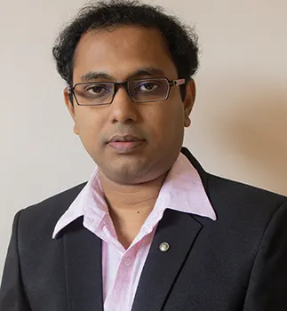
TPC Co-Chairs
Workshop Co-Chairs
Doctoral Symposium Co-Chairs
Demo Session Chair
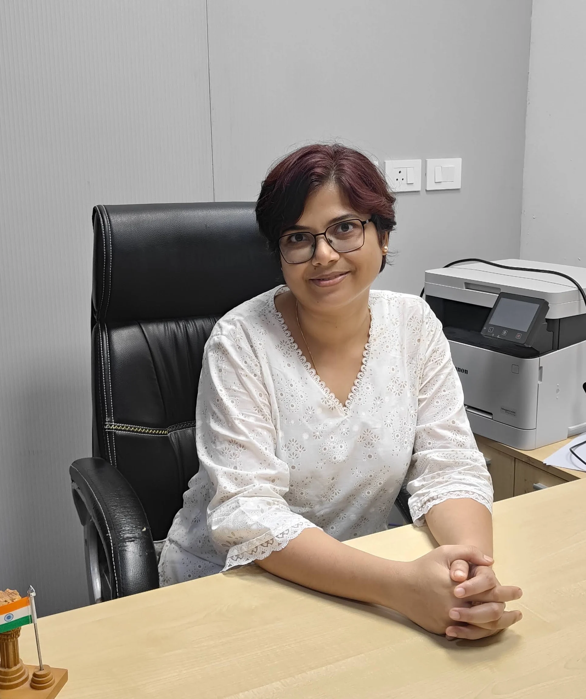
Keynote Chair
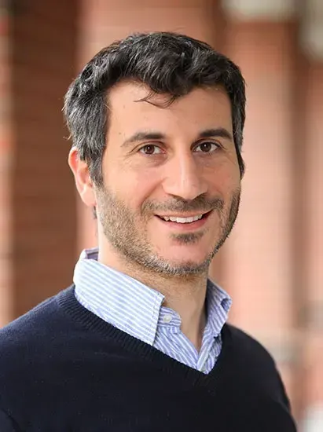
Tutorial Co-Chairs


Panel Co-Chairs
Poster Co-Chairs
Registration Chair
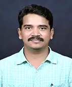
Sponsorship Co-Chairs
Publication Co-Chairs
Finance Co-Chairs
Local Organizing Co-Chairs
Publicity Co-Chairs
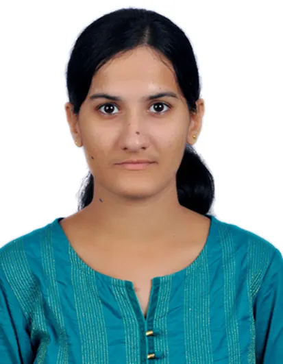
Student Travel Grant Chair
Social Media Chair
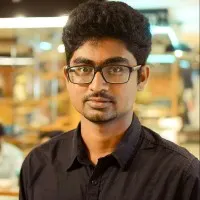
Web Chair
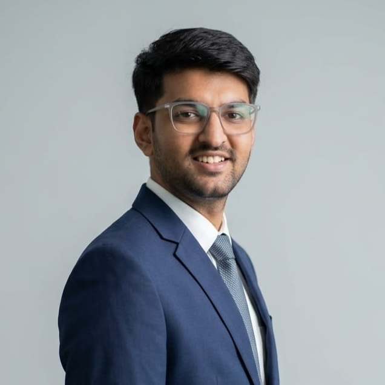
ICDCN Steering Committee
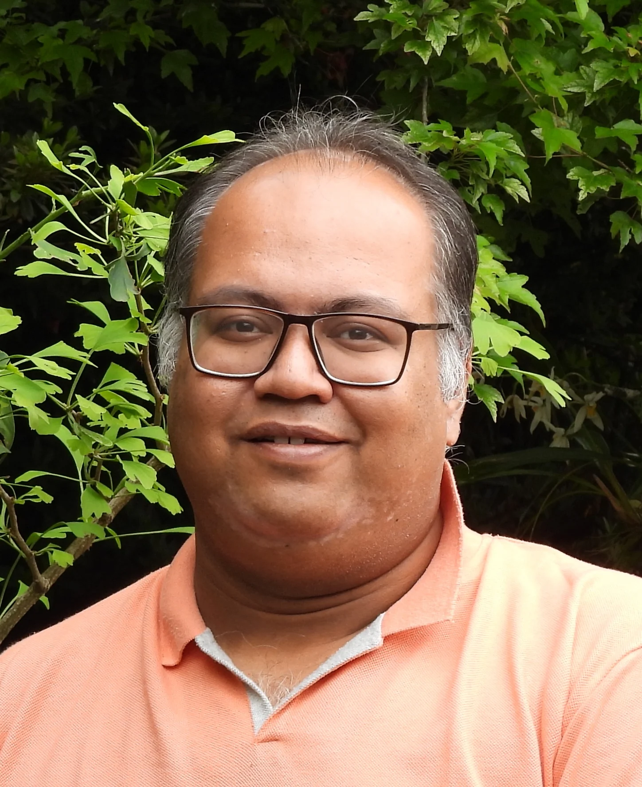
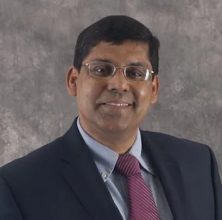
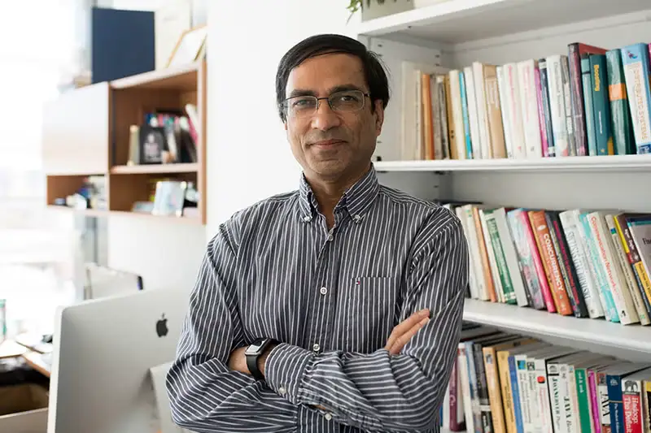
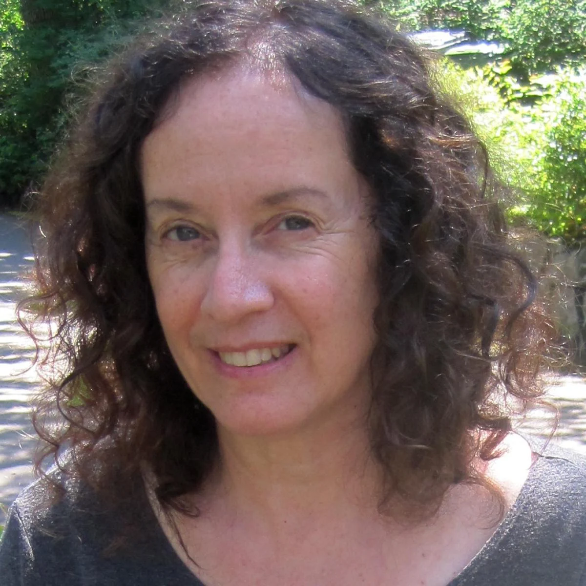
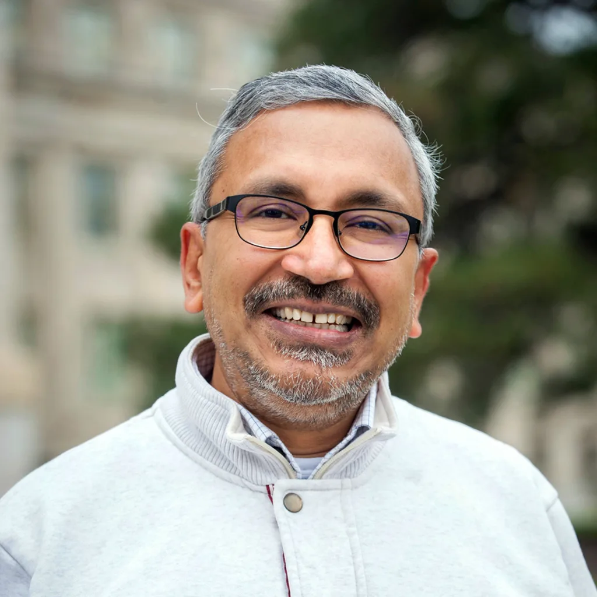
ICDCN Advisory Committee
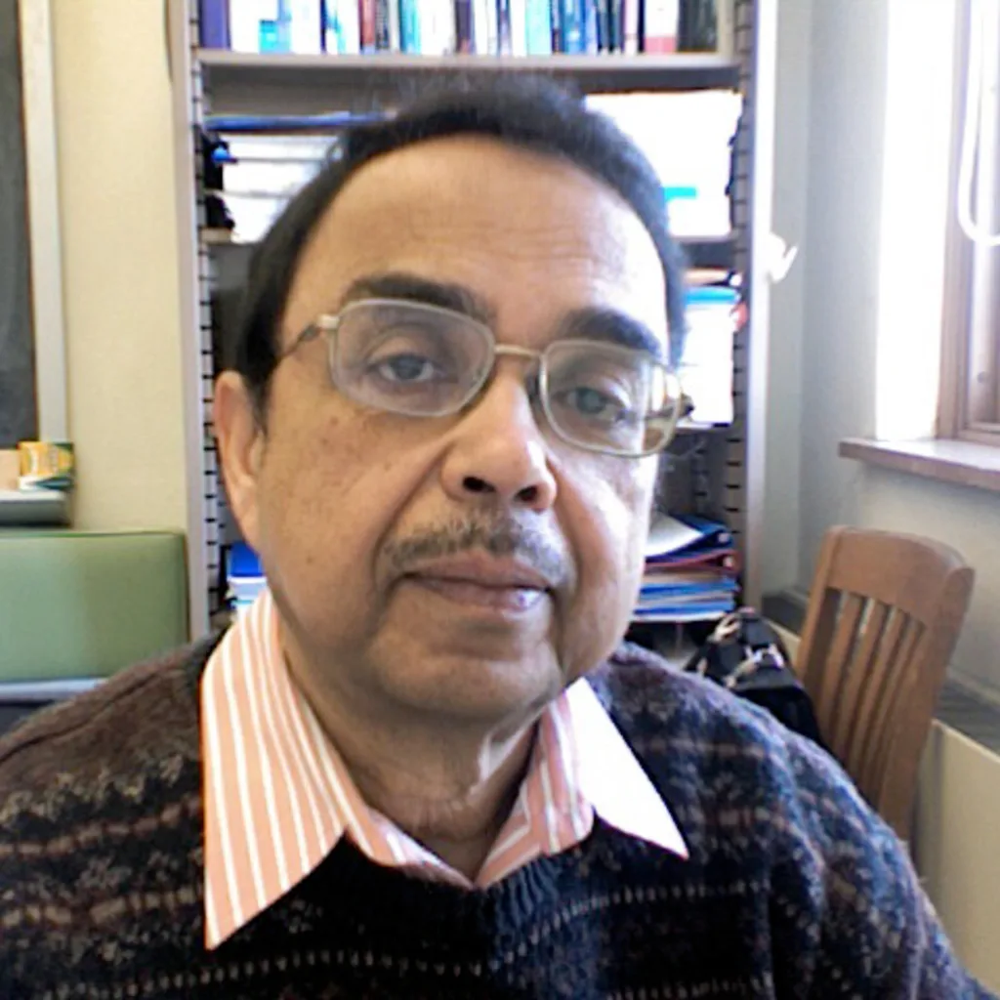
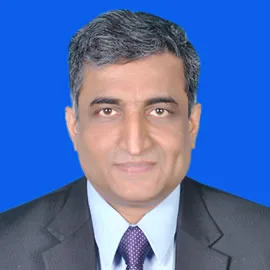
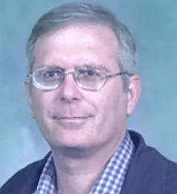
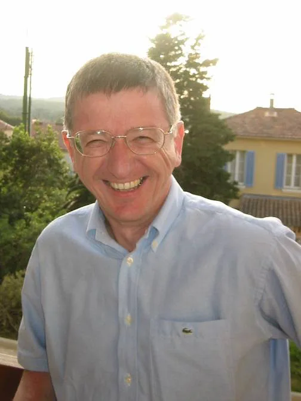
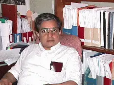
Program Committee — Networking Track
63 members
Viviana Arrigoni
Sapienza University of Rome, Italy
Wei Bao
The University of Sydney, Australia
Francesco Betti Sorbelli
University of Perugia, Italy
Pradyumna Bishoyi
IIT Jodhpur, India
Chiara Boldrini
CNR-IIT, Italy
Torsten Braun
University of Bern, Switzerland
Ayon Chakraborty
IIT Madras, India
Soumyajit Chatterjee
Nokia Bell Labs, UK
Binbin Chen
Singapore University of Technology and Design, Singapore
Ashok Kumar Das
IIIT Hyderabad, India
Debasree Das
University of Bamberg, Germany
Anirban Das
BITS Pilani Goa, India
Maria Diamanti
National Technical University of Athens, Greece
Romaric Duvignau
Chalmers University of Technology, Sweden
Anna Foerster
University of Bremen, Germany
Nirnay Ghosh
IIEST Shibpur, India
Sukhpal Singh Gill
Queen Mary University of London, UK
Jahan Hassan
Central Queensland University, Australia
Yanqiu Huang
University of Twente, Netherlands
Polly Huang
National Taiwan University, Taiwan
Dheryta Jaisinghani
University of Northern Iowa, USA
Anura Jayasumana
Colorado State University, USA
Pragma Kar
IIIT Delhi, India
Chamara Manoj Madarasingha
Curtin University, Australia
Peng-Yong Kong
Singapore Institute of Technology, Singapore
Evangelos Kranakis
Carleton University, Canada
Ulf Kulau
Hamburg University of Technology, Germany
Prabhat Kumar
LUT University, Finland
Guohao Lan
TU Delft, Netherlands
Eric Lanfer
Osnabrück University, Germany
Weifa Liang
City University of Hong Kong, Hong Kong
Sreelakshmi Manjunath
IIT Mandi, India
Rahat Masood
UNSW Sydney, Australia
Deepak Mishra
UNSW Sydney, Australia
Ayan Mondal
IIT Indore, India
Vinayak Naik
BITS Pilani Goa, India
Edit Ngai
The University of Hong Kong, Hong Kong
Shantanu Pal
Deakin University, Australia
Dirk Pesch
University College Cork, Ireland
James Pope
University of Bristol, UK
Gowri Ramachandran
Queensland University of Technology, Australia
Alok Ranjan
Bosch, India
Theofanis Raptis
CNR-IIT, Italy
Anuradha Ravi
University of Maryland Baltimore County, USA
Andreas Reinhardt
TU Clausthal, Germany
Girish Revadigar
IIIT Dharwad, India
Sudipta Saha
IIT Bhubaneswar, India
Normalia Samian
Universiti Putra Malaysia, Malaysia
Susmit Shannigrahi
Tennessee Tech, USA
Grigore Stamatescu
University Politehnica of Budapest, Hungary
Venkatesh Tamarapalli
IIT Guwahati, India
Xu Tao
Kennesaw State University, USA
Kavin Kumar Thangadorai
Technology Innovation Institute, UAE
Sébastien Tixeuil
Sorbonne University, France
Wanqing Tu
Durham University, UK
Mohammad Yusuf Sarwar
University of Missouri-Kansas City, USA
Lorenzo Valerio
CNR-IIT, Italy
Rohit Verma
Intel, India
Fang-Jing Wu
National Taiwan University, Taiwan
Peter Zdankin
University of Duisburg-Essen, Germany
Matteo Zella
Niederrhein University of Applied Sciences, Germany
Qiaolun Zhang
Politecnico di Milano, Italy
Jin Zhang
Shenzhen University, China